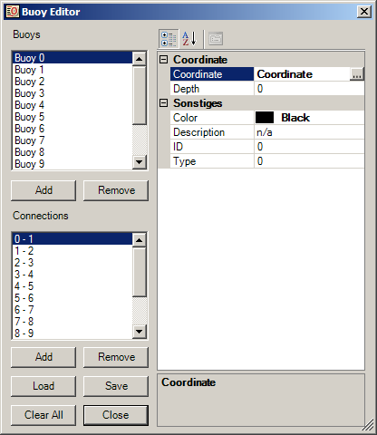
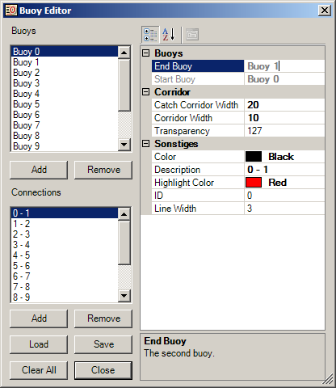
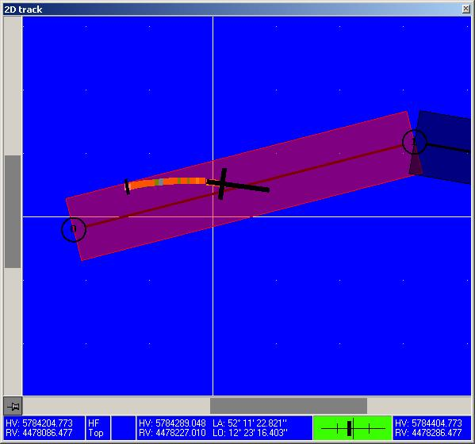

|
||||||

|
Zur Unterstützung der Navigation, insbesondere das Befahren definierter Korridore, können sogenannte Bojen angelegt werden. Dies sind Punktobjekte im 2D-Betrachtungsfenster, die Neben der Koordinate noch eine bestimmte Farbe und Beschreibung erhalten können. Eine Boje kann über zwei Wege erzeugt werden:
Mit den Schaltflächen "Add" und "Remove" können Bojen hinzugefügt und auch gelöscht werden. Analog werden Verbindungen zwischen Bojen angelegt (s.u.). Mit "Save" und "Load" wird die Bojenliste samt ihren Verbindungen in eine separate XML-Datei gespeichert bzw. aus einer solchen geladen. Das akutelle Projekt bleibt davon unberührt. Die Bojen werden ebenfalls mit dem Projekt mitgespeichert und geladen. Die Schaltfläche "Clear" löscht die Listen.  Durch Auswahl einer Boje in der oberen Liste ändert sich die Detailbetrachtung rechts - es werden die Eigenschaften der Boje angezeigt.
Zwischen den Bojen können Verbindungslinien angezeigt werden. Diese müssen vom Anwender spezifiziert werden. Dafür gibt es die zweite Liste "Connections". Beim Hinzufügen einer neuen Bojenverbindung wird der Anwender aufgefordert, die Start- und Zielboje auszuwählen. Die Verbindung trägt als Standardeinstellung eine Beschreibung mit den IDs der beiden Bojen in der Form "[Startbojen-ID] - [Zielbojen-ID]". Diese kann nachträglich geändert werden.  Durch Auswahl einer Bojenverbindung in der untern Liste ändert sich die Detailbetrachtung rechts - es werden die Eigenschaften der Verbindung angezeigt.
Ergänzend zur Verbindungsline kann ein dazu zentriert verlaufender Korridor definiert werden (Eigenschaft "Corridor Width"). Das Programm versucht dann während der Aufnahme den nächstgelegenen Korridor zu erfassen und hebt diesen hervor (siehe Bild unten). Zusätzlich wird die Entfernung des Bootes von der Idealline akustisch (abschaltbar) und optisch angezeigt.  Der Balken rechts unten stellt die Abweichung von der Idealline dar. Er verfärbt sich von grün in gelb bis zum Rand des Korridors und danach weiter in rot bis zur durch die Fangweite eingestellte Entfernung zur Idealline. Die akustische Signalisierung steigert die Tonhöhe mit wachsendem Abstand zur Idealline (keine Unterscheidung der Lage) und verstummt beim Überschreiten der doppelten Entferung zur Verbindung. |